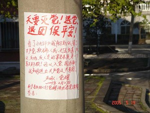
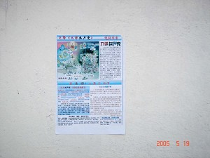

28/05/05 — Từ DAJIYUAN.COM
Khi "Chín Bài Bình Luận Về Đảng Cộng Sản Trung Quốc" đang lan rộng, nhiều người dân thường ở Trung Quốc đang sử dụng nhiều phương tiện để rút khỏi Đảng Cộng Sản Trung Quốc (ĐCSTQ). Website Minh Huệ đã ghi nhận vào ngày 24 tháng 5 rằng trong tháng 4 và tháng 5, rất nhiều tuyên bố thoái đảng, cùng với thông tin và ảnh về "Cửu Bình", đã xuất hiện ở thành phố Cáp Nhĩ Tân.

Một tuyên bố rút khỏi và tố cáo Đảng cộng sản Trung Quốc.
Tiêu đề: “Trời muốn diệt đảng! Hãy thoái đảng thoái đoàn để an toàn!”
Một tờ giấy nổi bật viết bằng mực đỏ kêu gọi "Tuyên bố rút khỏi ĐCSTQ và ĐTNCS (Đoàn thanh niên cộng sản)" đã xuất hiện trên cột điện dọc theo phố ở thành phố Cáp Nhĩ Tân. Tiêu đề của áp phích là "Rút khỏi ĐCSTQ và ĐTNCS giữ cho mình được an toàn".
Nội dung là "Sau khi đọc Cửu Bình, tôi hoàn toàn nhận ra bản tính tà ác của ĐCSTQ là phản thiên nhiên, phản nhân loại, là lừa dối nhân dân, và tấn công vào lòng tốt và lương thiện. Nó là một giáo phái tà ác thực sự! Tôi xấu hổ vì đã gia nhập ĐCSTQ và ĐTNCS! Tôi chính thức tuyên bố rằng tôi rút khỏi ĐCSTQ và ĐTNCS. Viết bởi Juexing. Ngày 27 tháng 2 năm 2005".
Đoạn cuối, phần chú thích viết: "Tôi hy vọng nhiều người lương thiện sẽ được đánh thức và rút khỏi đảng tà ác như thế họ có thể được an toàn và yên bình". Có một chỗ trống tại cuối của tờ giấy để mọi người có thể ký tên của họ.

Áp phích có ảnh và nhiều thông tin hơn về "Cửu Bình" và làm thế
nào mọi người có thể rút khỏi ĐCSTQ.
Một "Tuyên bố rút khỏi ĐCSTQ, ĐTNCS, và ĐTNTP (Đội thiếu niên tiền phong)" nói rõ: "Sau khi đọc 'Cửu Bình', chúng tôi hoàn toàn nhận ra bản tính xấu xa của ĐCSTQ là thối nát, bại hoại, đàn áp dân thường, đầu độc lòng tốt, phỉ báng thần và Phật. Các cuộc vận động chính trị của ĐCSTQ từ "Đại Cách Mạng Văn Hóa", "Đại Nhảy Vọt", "Chiến Dịch Tam Phản", "Chiến Dịch Ngũ Phản", "Vận Động Chống Cánh Hữu", "Cuộc Tàn Sát Tại Quảng Trường Thiên An Môn Mồng 4 Tháng 6", tới cuộc khủng bố Pháp Luân Công đã mang tới những thảm họa chưa từng có lên những người dân thường. Từ khi ĐCSTQ nắm quyền lực đã có khoảng 80 triệu cái chết bất thường. Khi các quan chức thua lỗ trong kinh doanh, dân thường bị đuổi việc...Không có cách nào dành cho người dân thường để nói lý với ĐCSTQ. ĐCSTQ thực sự là một giáo phái tà ác và tà linh phản nhân loại, phản xã hội, phản tự nhiên và phản vũ trụ. ĐCSTQ đã phạm vào những tội ác lớn. ĐCSTQ đang bị loại bỏ! Hàng chục triệu đảng viên và các tổ chức khác của nó (ĐTNCS và ĐTNTP) cũng đang gặp nguy hiểm. Chỉ bằng cách rút khỏi chúng thì một người mới có thể an toàn. Chúng ta đã học được bài học từ những sự kiện đột ngột "SARS" và "Sóng thần"! Đừng giơ đầu chịu báng thay cho ĐCSTQ! Hoàn toàn chia tay với tà linh cộng sản và rút khỏi tất cả các tố chức của nó là cách một người có thể chọn con đường và tương lai tươi sáng cho chính mình và cho gia đình mình! Viết bởi Liu Zhengxiang, Wang Yu, Liu Zhengfa, và những người khác, tổng số 261 người. Ngày 13 tháng 5, 2005.”
Thông tin đầy màu sắc về "Cửu Bình" đã được dán lên một bức tường gần cộng đồng này, được trang điểm bằng ảnh và từ ngữ. Một áp phích có tiêu đề "Lựa chọn tương lai của bạn". Một trong những bức ảnh có đầu đề "Nhân dân đang chia tay với ĐCSTQ và chọn một tương lai tốt đẹp và tươi sáng". Trong những áp phích này có viết: "Tới giữa tháng 5, hơn một triệu năm trăm ngàn người đã rút khỏi ĐSCTQ (ĐTNCS)".
Một "Tuyên bố rút khỏi ĐCSTQ của một phó thị trưởng" cũng được dán trên một cột điện gần một chợ.